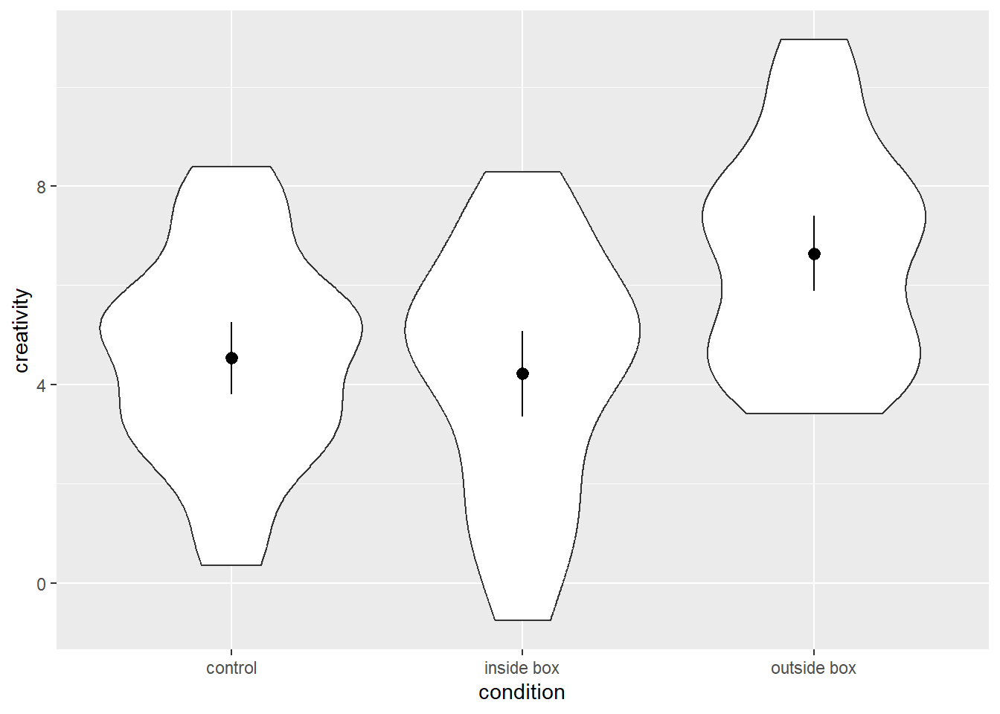
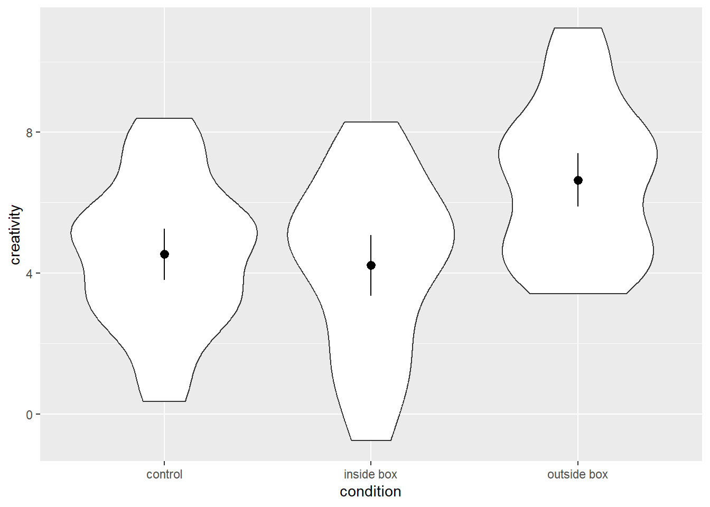
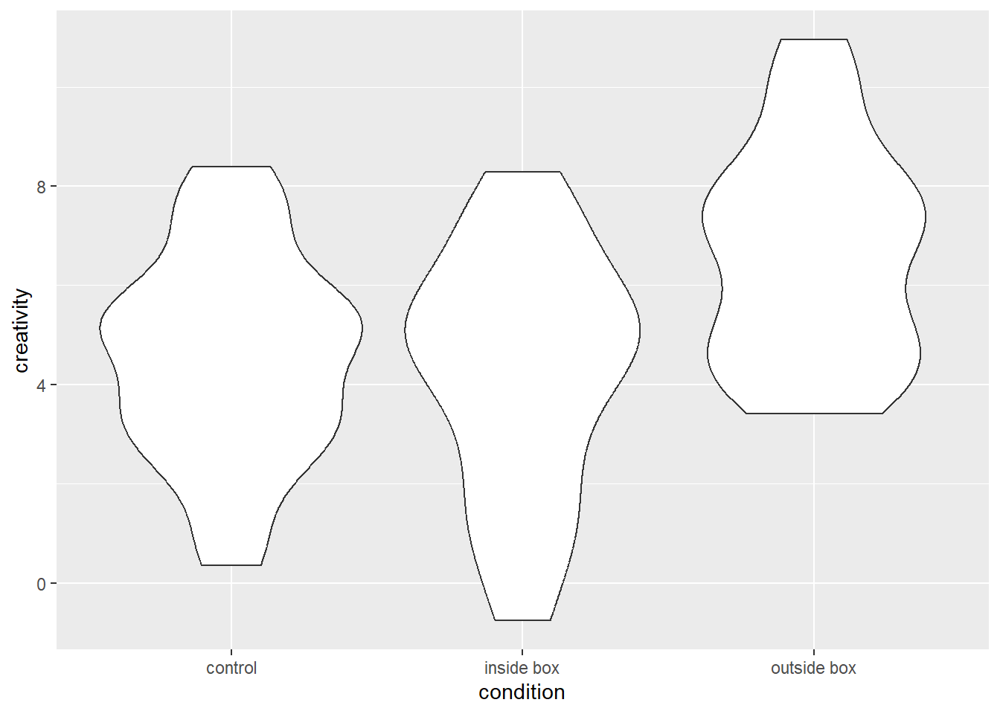
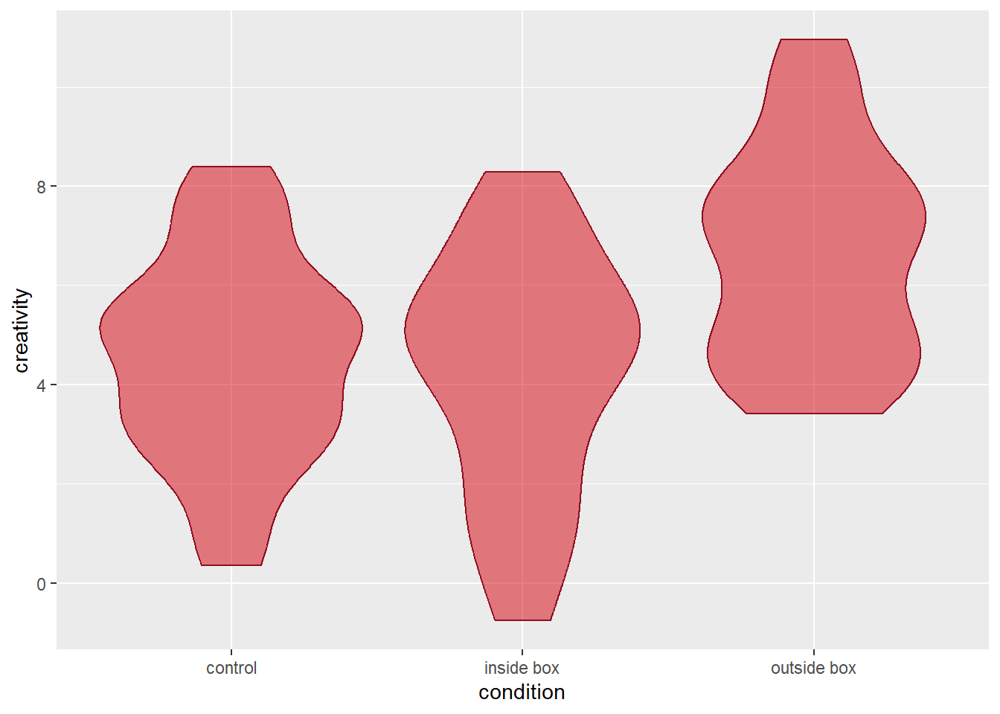
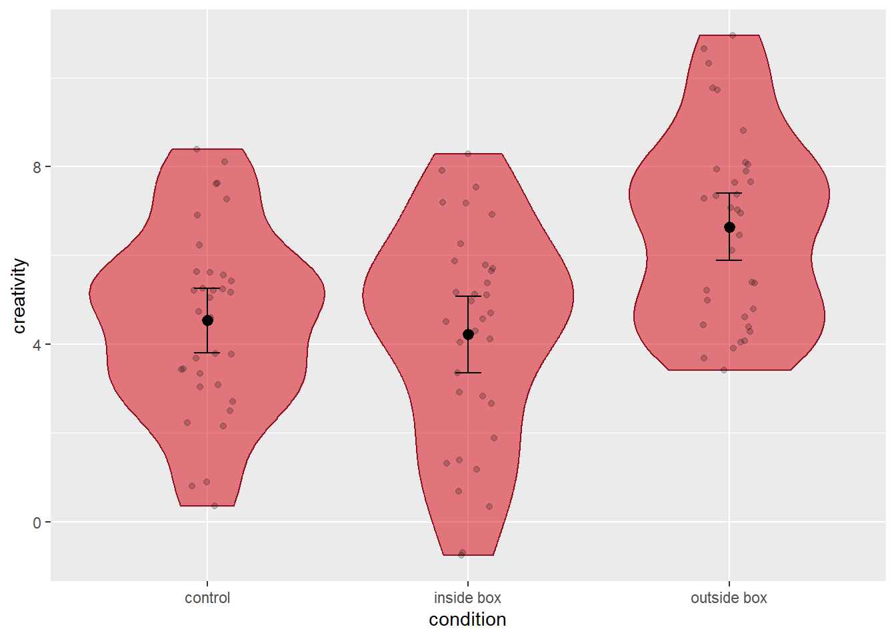

ID condition creativity
1 102 control 5.17
2 102 control 5.42
3 102 control 3.78
4 102 control 3.09
5 102 control 5.21
6 102 control 0.36
We often find ourselves in situations, in which we want to plot a continuous variable against one or more categorical variables. It is quite common for people in such situations to use bar plots with the height of the bars corresponding to the mean for one category. Those bar plots are sometimes (but not always) accompanied by error bars indicating confidence intervals or stand errors to convey a sense of the variability of the data. However, bar plots may not be the best choice…

As this meme illustrates, bar plots can mask substantial differences between categories because they reduce the displayed information to means and some measure of variability. They do not contain information about the distribution of the data.
Therefore, it is worthwhile to consider violin plots as an alternative. A Violin plot is essentially a graphical representation of the density of a continuous variable. In order for such a plot to exceed a bar plot in terms of its informational value, we need to supplement the information about the distribution of the continuous variable with the information that bar plots usually provide: means and some measure of variability. In the following, we will learn how to do that using ggplot2.
We will first look at cases where we have a single categorical variable that groups our data. Before we can plot, we need some data, so let’s make some up. Let’s pretend we ran an experiment on creativity where we compare the creativity of ideas generated by people between three conditions: a condition where 102 people work work on the task sitting in a cardboard box, a condition in which they sit outside the box, and control condition without any boxes. The dependent variable is a rating of participants’ originality across all generated ideas. Here is what the data (stored in df1) would look like:
ID condition creativity
1 102 control 5.17
2 102 control 5.42
3 102 control 3.78
4 102 control 3.09
5 102 control 5.21
6 102 control 0.36
If we want to plot the data using violin plots, we first need to set up the base plot. Because we want to plot creativity by condition, we need to define both the x and y argument in the aes() function call when setting up the base plot. Here is the syntax:
# create an empty base plot for a violin plot
p0 = ggplot(data = df1, mapping = aes(x = condition, y = creativity))As we can see below, this base plot has a categorical x-axis and a continuous y-axis with the range of the latter being determined by the range of the empirical data of the y-variable.
Next, we want to add the violins. We can do so using the function geom_violin(), which has “ydensity” as a default stat argument. Due to the interchangeability of stats and geoms in ggplot2, we could also add the layer using the stat_ydensity() function, which has a geom argument with “violin” as the default. See the syntax below:
# add a layer with a violin to the empty base plot
# Option A: use geom_violin
p1 = p0 +
geom_violin()
# Option B: use stat_ydensity
p1 = p0 +
stat_ydensity()Either version of the code will yield the same plot, namely one that contains one violin for each condition. These violins are axis-symmetric depictions of the density of the y-variable, that is, the wider the violin is at a given level of the y-axis, the more frequently we would expect to observe that value of the y-variable. The plot looks as follows:

As with all geoms in ggplot2, we can customise their appearance. Violins are polygons, and as such, we can separately define their fill and colour argument to toggle their filling and line colours, respectively. Since we did not specify either of these argument in the base plots function call of aes(), we can define them in the function call of geom_violin() (or stat_ydensity()), and the values we specify there, will be applied equally to all violins. For example, we could ask R to fill the violins in Queen’s vibrant red and colour their borders in Queen’s dark red. Fully opaque filling colours are not necessariyl practical if we want to add more layers to the plot, so we will use the ggplot2 function alpha() to make the filling colour semi-transparent. Here is how the code would look:
# violin plot with custom filling (50% transparency) and border colour
p1 = p0 +
geom_violin(fill = alpha("#D6000D", alpha = 0.50), colour = "#8F0E20")The resulting graph looks as follows:

So far, so good. We now have three beautiful violins, but we still miss information about the means and dispersion of the data that a run-of-the-mill bar plot would convey. We can add this information by adding additional layers. One option is to use the geom_pointrange() function, which will create a point as well as a vertical line for each category of our x-variable. The geom_pointrange() function requires three bits of information for each point range to be drawn:
In order to convey this information to the geom_pointrange() function, we need to define two of its arguments. First, we need to tell it, which stat to use. Instead of the default value for the stat argument (“identity”), we need to set it to “summary”. That means, we tell the function that we will not use the data as is, but instead compute some summary statistics from it. If we do that, we also need to specify the function that does these computations by defining the argument fun.data. We can define this argument by stating the name of the function we want to use (just the name of the function without parentheses). If we want to display means and 95% confidence intervals, we can either use the function mean_cl_normal() (computes a mean plus the parametric 95% confidence interval) or the function mean_cl_boot() (computes the mean and a bootstrapped 95% confidence interval). let’s have a look at the syntax:
# add point ranges depicting means and parametric 95% confidence intervals to the violin plot
p2 = p1 +
geom_pointrange(stat = 'summary', fun.data = mean_cl_normal)Here is what the plot looks like:
The function geom_pointrange() allows us to customise the the appearance of the points using the argument shape (see the section on scatterplots for details). Depending on which shape we choose, we can then toggle the filling and/or border colour of the points via the function’s fill and colour arguments.
The point ranges already convey the information we are interested in (central tendency and dispersion of the data in each category). However, the lines indicating the 95% confidence intervals look a bit different from the commonly used error bars because they miss the little horizontal bars at the end. If we want, we can add them by adding another layer to the plot using the geom_errorbar() function. Similar to the geom_pointrange() function, we need to define the stat argument as “summary” and provide a function that returns the desired information as the fun.data. We can use the same function as above, namely mean_cl_normal() (or mean_cl_boot() if we prefer non-parametric confidence intervals). A final think to consider is how wide we want to error bars to be. We can toggle their width using the width argument (the default is 1, which creates very wide error bars; we will set it to 0.1 instead).
Syntax as follows:
# add error bars around the means for each category
p3 = p2 +
geom_errorbar(stat = 'summary', fun.data = mean_cl_normal, width = 0.1)Let’s have a look at the result:
Due to the interchangeability of stats and geoms in ggplot2, we could add point ranges and error bars using the stat_summary() function instead. We would simply need to define the geom argument as “pointrange” and “errorbar”, respectively. The rest of the function calls would be identical to those of the geom_pointrange() and geom_errorbar() functions as shown above.
A final thing we may want to consider is adding the individual data points in the plot. An elegant way to do so is the geom_jitter() function. When we do plots, jittering means to randomly shift the position of a point by a small margin (jittering is useful when we have overlapping data points). The geom_jitter() function lets us define in which range we want to randomly move points horizontally and vertically using the width and height arguments. Each of these arguments must be defined a numeric value. These values correspond to the units of the x- or y-axis. For example, a value of 0.3 means that the points are shifted randomly by up to 0.3 axis units in either direction (up/down or left/right, respectively). When plotting a continuous y-variable against a categorical x-variable, it suffices to shift the points horizontally. Since the default for the height argument is 0, it is sufficient to define the width argument. We will set it to 0.1, here. Similar to geom_point(), we can also change the shape of the points using the shape argument, and we can toggle the fill and/or colour arguments depending on the respective character. In the example below, we use the default points that only have the colour argument. We will use semi-transparent points in order not to distract the viewers from the point ranges and error bars.
# add jittered points to the plots
p4 = p3 +
geom_jitter(width = 0.1, colour = alpha('black', alpha = .20))Here is the resulting plot:

As we can see, we now have a rather informative plot, showing each individual data point, the distribution of the data in each condition, as well as information about means and confidence intervals. Much better than bar plots, wouldn’t you agree?